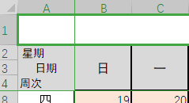
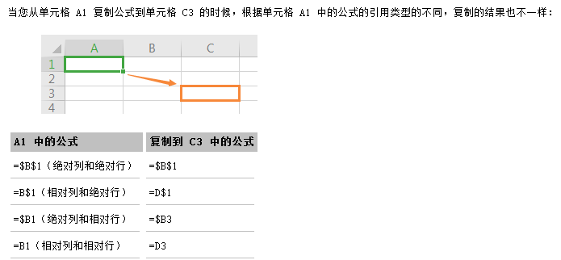

excel常用的函数
Excel函数 入门
$1 单元格和引用
EXCEL表的每个单元格都有两个索引：
- 行号，以数字标记，从1开始
- 列号，以字母标记，如A\B\C…（大小写不区分）

单元格的引用有如下几种方式：
- 同sheet（工作表）
- 中单元格可以用
A1表示相对列（第一列第一行），还有一种方式是$a$1,表示绝对列和行 - 一列数据
A；一列某几行A1:A7；若干列A:D - 一行数据
$10:$10,如=SUM($1:$1)可以求出第一行所有值的和。 - 单元格区域
A1:B2
- 中单元格可以用
- 同一工作簿中不同工作表上的单元格引用
- 用
sheet1!A1表示工作表sheet1的第一列第一行。
- 用
- 不同工作簿中的单元格引用
- 如果工作簿已打开,例：
[会计报表.xls]!工资表!A1 - 如果工作簿已关闭：
D:\工作目录\[会计报表.xls]工资表'!A1。其中“会计报表.xls”是工作簿名称，“工资表”为该工作簿中的工作表名称。“D:\工作目录\”为“会计报表.xls”这个工作簿的文件路径。
- 如果工作簿已打开,例：
绝对引用$A$1和相对引用A1：相对引用在复制单元格时会自动更新值，但绝对引用不会。两种方式可以混用。

$2 关于公式
公式是工作表中进行数值计算的等式。公式键入是以=开始的。简单的公式有加、减、乘、除等计算。例如 =3*6-2 、=A2+B16 、=C4/A6 ……
复杂一些的公式可能包含函数 、引用、运算符 (有数学、比较、逻辑和引用运算符等）和常量 （不进行计算的值，因此也不会发生变化）。
1. ROW / COLUMN函数
这两个函数返回引用的行号和列号，如 =ROW($A$1)返回1如 =COLUMN($B$2)返回2(注意不是B)
2. IF函数
函数定义：根据条件满足与否返回不同的值
使用格式：IF(logical_test,value_if_true,value_if_false)
白话：IF(条件,与条件一样时运算这个,与条件不同时运算这个)
如 IF(AND(C1>80,D1>80),"优", "不及格")，表示C1和D1均大于80时显示优，否则是不及格。
3. INDEX
返回表或区域中的值或值的引用。函数INDEX()有两种形式：数组形式通常返回数值或数值数组；引用形式通常返回引用。 INDEX(array,Row_num,column_num) 返回数组中指定单元格或单元格数组的数值。 如=INDEX(A1:A6,1,1) 返回一个引用，是A1:A6这个区域数组的第一行第一列。
4. COUNTIF(range,criteria) 、 SUMIF（range,criteria,sum_range）
COUNTIF(range,criteria) 返回区域中满足给定条件的单元格的个数。SUMIF判定条件类似COUNTIF，但是以sum_range区域来进行计算求和。
| A | B | |
|---|---|---|
| 1 | 数据 | 数据 |
| 2 | 苹果 | 32 |
| 3 | 柑桔 | 54 |
| 4 | 桃 | 75 |
| 5 | 苹果 | 86 |
根据上表列出公式：
| 公式 | 说明（结果） | |
|---|---|---|
| =COUNTIF(A2:A5,“苹果”) | 计算第一列中苹果所在单元格的个数 (2) | |
| =COUNTIF(B2:B5,">55") | 计算第二列中值大于 55 的单元格个数 (2) | |
| =SUMIF(A2:A5,“苹果”,B2:B5) | 计算第二列中值大于 55 的单元格个数 总和(118) |
5 MATCH(lookup_value,lookup_array,match_type)
返回在指定方式下与指定数组匹配的数组中元素的相应位置。如果需要找出匹配元素的位置而不是匹配元素本身，则应该使用 MATCH 函数而不是 LOOKUP 函数。
这个函数可以和INDEX配合使用，完成交叉索引功能，如我们有表A和新表B，当需要在新表的一列对照旧表的一列，找到旧表中的另外一列数据。
=INDEX(计算机教师信息2020!A:P, MATCH(A1,计算机教师信息2020!B:B,0), 16)
该公式中index函数给的行号是MATCH(A2,计算机教师信息2020!B:B,0)，表示查找当前工作表A2单元格在另外一个工作表计算机教师信息2020的B列中序号。返回值是A2对应在工作表计算机教师信息2020中的第16列的数据
6 VLOOKUP
**函数定义：**按照垂直方向搜索区域
**使用格式：**VLOOKUP(lookup_value,table_array,col_index_num,range_lookup)
参数定义：
Lookup_value：为需要在数组第一列中查找的数值.Lookup_value可以为数值、引用或文本字符串.
Table_array: 为需要在其中查找数据的数据表.可以使用对区域或区域名称的引用,例如数据库或列表.
Col_index: 为table_array中待返回的匹配值的列序号. Col_index_num为1时,返回table_array第一列中的数值；col_index_num为2,返回table_array第二列中的数值,以此类推.如果col_index_num小于1,函数VLOOKUP返回错误值值#VALUE!；如果col_index_num大于table_array的列数, 函数VLOOKUP返回错误值#REF!.
Range_lookup：为一逻辑值,指明函数VLOOKUP返回时是精确匹配还是近似匹配.如果为TRUE或省略,则返回近似匹配值.也就是说.如果找不到精确匹配值,则返回小于lookup_value的最大数值；如果range_value为FALSE,函数VLOOKUP将返回精确匹配值.如果找不到,则返回错误值#N/A.
精确查找是vlookup最基本也是最常用的功能，如=VLOOKUP(H5,B5:D13,3,0)表示查找H5单元格，搜索范围在B5:B13中的第3列，使用精确匹配查找。
该函数也可以完成交叉索引，如=VLOOKUP(A2,计算机教师信息2020!B:P,15,FALSE)查找A2在'姓名-电话'!B:P中某一行，返回此行的第16列*(B+15)*引用。和上节MATCH功能一样！
| 空格问题 | =VLOOKUP(CLEAN(C2),Sheet1!A2:D10,4,FALSE) |
| 数字格式问题 | 转换格式 |
| 莫名其妙无法匹配 | 注意将索引列放在前面，如A,B,C 索引B的值，查找A，有时候会无法找到，互换A、B列 |